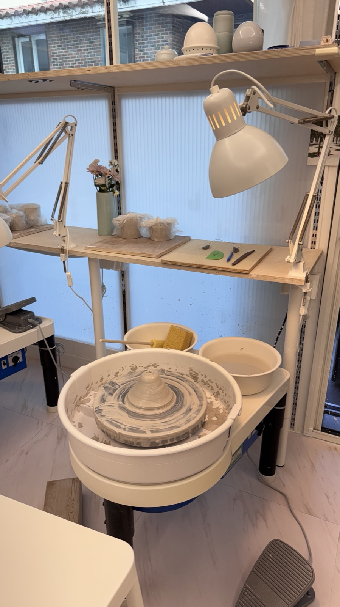
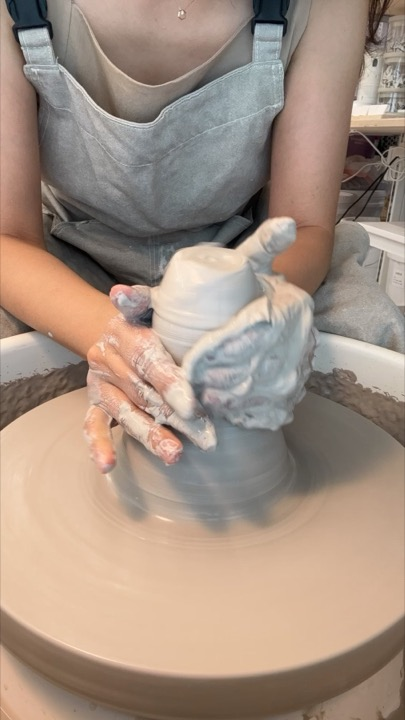
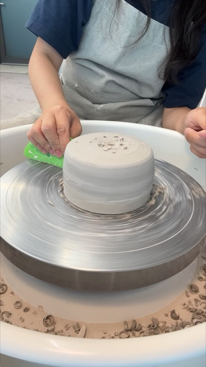
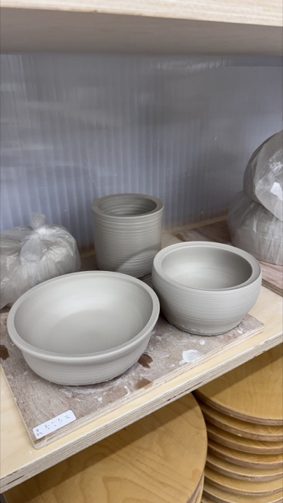
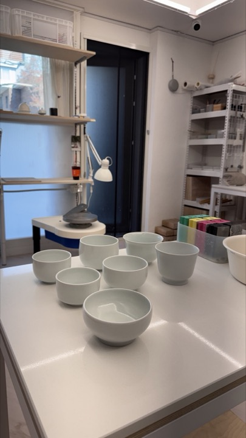
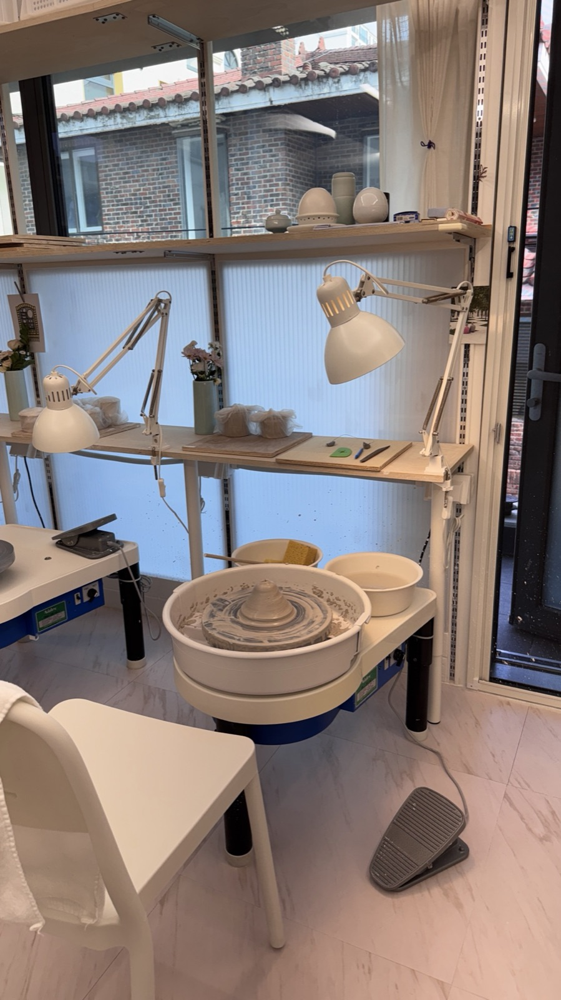

ABOUT
손이 기억하는 만큼만
천천히 만듭니다
흙의 기록은 작은 물레 작업실입니다. 매일 쓰는 밥공기와 찻잔, 식탁 위에 오래 남을 화병을 만듭니다. 흙을 고르는 일부터 가마 문을 여는 일까지 모두 한 사람의 손을 거칩니다.
같은 이름의 그릇이라도 하나도 똑같지 않습니다. 그날의 습도, 가마 안의 자리, 손끝의 힘이 그릇마다 다른 표정을 남깁니다. 그 차이를 지우지 않고 기록하는 것이 이 작업실의 이름이 되었습니다.
PROCESS
그릇 한 점이 나오기까지 3주

01
물레 성형
흙의 중심을 잡고 손으로 벽을 올려 모양을 만듭니다.

02
굽 깎기
반쯤 마른 그릇을 뒤집어 바닥을 깎고 굽을 세웁니다.

03
건조 · 초벌
일주일 동안 말린 뒤 800도에서 한 번 굽습니다.

04
시유 · 재벌
유약을 입혀 1,250도에서 다시 구우면 그릇이 됩니다.
VISIT
작업실은 예약제로 엽니다
